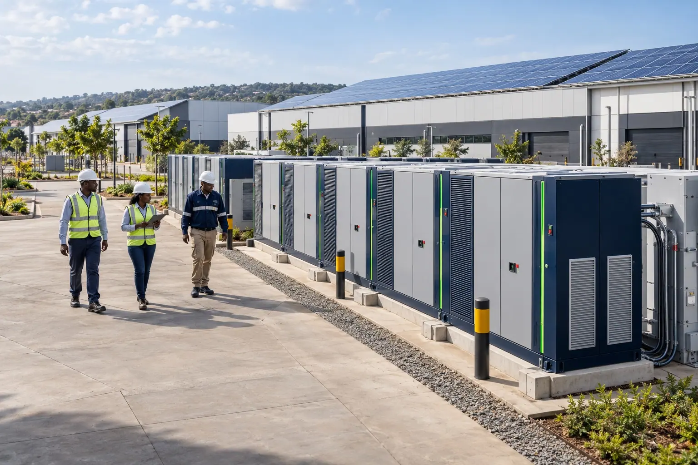

Buyer guide / 04
One system.
Three decisions.
A solar and storage project is not a shopping list. The array, the inverter and the battery are sized in a fixed order, starting from what the site actually consumes, and each choice limits the next one.
Read the sizing sequence
01 / The sequence
Read the load before buying a single panel.
Most enquiries arrive as a product question: how many panels, which inverter, how much battery. Those are the last three questions. The first three are what the site draws at its peak, how much energy it uses across a day, and what has to keep running when the grid does not.
The order matters because the answers constrain one another. The battery voltage window limits which inverter can control it. The inverter's DC input window limits how many modules can sit on one string. The array's realistic output sets how quickly the battery can recover after a backup event. Decide these in the wrong order and the individual components can each be correct while the system underperforms.
- Peak demand (kW): the highest power the system must supply, including motor starting.
- Daily energy (kWh): normal consumption across a working day.
- Critical load (kW for hours): what must survive an outage, and for how long.
A single monthly electricity bill cannot supply any of these three figures with useful accuracy. It shows total energy and a monthly charge, not how quickly power is drawn or when.
02 / Generation
Nameplate watts are not delivered watts.
Array sizing starts from daily energy and works backwards through the losses. A module rated at 580 W under standard test conditions does not deliver 580 W at midday in a hot climate, and the system does not see the array's output at the load either.
Plan with the losses in place: cell temperature (module output typically falls around 0.3% per degree above 25 °C cell temperature), soiling and dust, mismatch between modules, DC cable losses, inverter conversion, clipping when the array exceeds the inverter's AC rating, and availability. In high-irradiance markets, 1,300–1,800 kWh per kWp-year is a common planning range; use local irradiance data rather than a generic figure before fixing the array size.
String design is a temperature problem
Two numbers decide the string length. The open-circuit voltage at the site's record low temperature must stay below the inverter's maximum DC input voltage. The voltage at operating cell temperature (often 60–70 °C in service) must stay inside the MPPT window. Design for both ends of the year, not for 25 °C.
Module format then follows the application rather than the datasheet. Visible commercial rooftops usually favour an all-black frame for appearance; ground-mounted and carport projects usually favour bifacial glass-glass modules, where the rear-side gain depends on mounting height, tilt and ground albedo. Compare modules by rated output, dimensions, temperature coefficient and warranty terms — details are on our solar PV module page, including the 580 W bifacial reference.
03 / Conversion
Pick the architecture before the model.
The inverter decision begins with how the site is fed, not with the power rating. Grid-connected, hybrid and off-grid are different operating architectures, and the choice changes the battery interface, the protection arrangement and the control logic.
- Grid-connected: solar reduces imported energy; export rules and the connection agreement set the limits.
- Hybrid: solar, battery and grid or generator operate together, with the inverter managing priority and backup.
- Off-grid: the inverter forms the grid, so generator support, load management and reserve behaviour matter more than export.
Once the architecture is fixed, the mechanical checks follow: single or three phase, rated continuous output at the site's real ambient temperature, peak output and surge duration, battery voltage window, communication protocol, parallel capability, generator input and protection requirements. A 50 kW inverter at 45 °C ambient is not a 50 kW inverter — review the derating curve, not just the headline rating.
Our inverter range page lists off-grid, hybrid, grid-tied and microinverter references with their AC output and battery interfaces; the 12 kW three-phase hybrid reference is a typical starting point for small commercial sites.
04 / Storage
Size for hours and discharge rate, not a round kWh number.
Battery selection usually stops at capacity. Two further numbers decide whether a cabinet does the job: usable energy and continuous discharge power.
A 215 kWh cabinet is not 215 kWh of delivered energy. Depth of discharge, the manufacturer's usable-energy definition, conversion losses and auxiliary consumption all reduce what reaches the load. System round-trip efficiency commonly lands in the mid-80s to around 90% depending on equipment and auxiliary loads, and usable energy may be defined at a specific temperature and C-rate.
Power matters just as much. A 100 kW / 215 kWh cabinet discharging at its rated 100 kW is empty in a little over two hours before losses; if the critical load is 100 kW for four hours, that cabinet is the wrong shape regardless of its capacity. Check the continuous discharge rating, the peak rating and its duration, and the derating at the site's ambient temperature.
The sizing trap
Oversizing the battery to cover an undefined backup period ties up capital and may leave the equipment operating far from its efficient range. Undersizing it produces a warranty conversation instead of a working site. Agree the reserve, the discharge profile and the recharge window in writing before ordering.
Compare the 100 kW / 215 kWh air-cooled cabinet with the 125 kW / 261 kWh liquid-cooled cabinet on the energy storage page. Cooling format, not capacity alone, often decides which is suitable for the site.
05 / Integration
The four interfaces that break otherwise good systems.
Component-level specifications can be correct while the assembled system fails. These four interfaces account for most of those failures.
- DC voltage window: the battery's operating range must sit inside the inverter's accepted range across the full state of charge, not only at nominal voltage.
- Phase, neutral and earthing: single-phase and three-phase equipment are not interchangeable, and site earthing practice differs by market.
- Communication: CAN or RS485 is not a protocol. Confirm the exact protocol, firmware compatibility and who supports the integration if the two devices come from different suppliers.
- Protection and control: breakers, fuses, isolation, transfer equipment and the priority logic must be designed as one system, then checked against local requirements.
Ask for a single-line diagram and an equipment schedule before the order, and confirm the battery and inverter combination in writing. Compatibility claims that are not tied to specific models and firmware versions are not compatibility confirmations.
06 / Procurement
Make two quotations answer the same question.
Comparing total price alone hides the differences that decide whether a project works. Require each supplier to quote against the same load profile, the same backup target and the same delivery boundary.
- Selected models with datasheets and the usable-energy definition.
- Continuous and peak output at the project's ambient temperature.
- Single-line diagram, equipment schedule and included protection.
- Installation scope, commissioning, destination documents and warranty terms.
- Exclusions listed as clearly as inclusions: civil work, cabling, freight, unloading, permits.
A short scope matrix is more useful than a line of cabinet prices. It also makes the next conversation faster when the destination market requires certification or documentation.
Continue reading
Use the battery storage planning guide to define the load and backup target, the hybrid versus off-grid guide to fix the architecture, and the export project checklist to assemble a complete quotation request.
07 / Buyer questions
Questions that come up before ordering.
Can I add storage to an existing solar installation?
Often, but the existing inverter decides the options. A grid-tied inverter without a battery interface usually needs either an AC-coupled battery system or replacement with a hybrid unit. Check the inverter model, its firmware and its supported battery list before assuming a simple addition.
Which comes first, the battery or the inverter?
The architecture comes first, then the inverter, then the battery within that inverter's supported voltage window. Choosing a battery first and searching for a compatible inverter afterwards reverses the constraint chain and narrows your options.
How much battery do I need for one day of autonomy?
Take the daily critical-load energy, not total site consumption, divide by usable-energy efficiency, and add the reserve you want to keep. One day of full-site autonomy is usually an expensive target; most commercial projects define a smaller essential-load panel instead.
Do I need three-phase equipment?
Above roughly 10–15 kW of continuous load, and wherever the site already runs three-phase motors, three-phase equipment is normally the practical choice. Confirm with the site electrician and the local connection rules.
What information makes a quotation accurate?
Installation country, load profile or interval data, essential-load list, backup duration, available space, ambient conditions and the required delivery boundary. The project checklist lists the full set.
Bring your site brief
Size the system
around the load.
Send the installation country, daily consumption, peak demand and backup requirement. We can start with the questions that decide the array, the inverter and the battery.